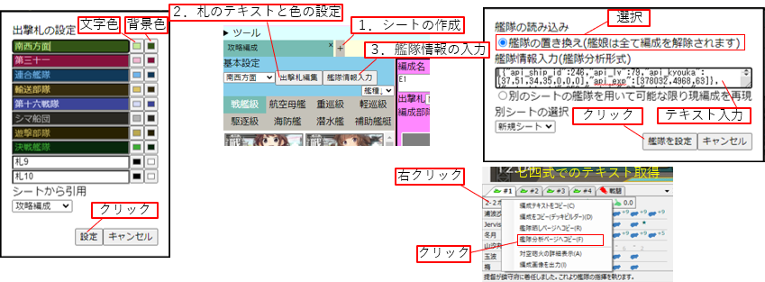
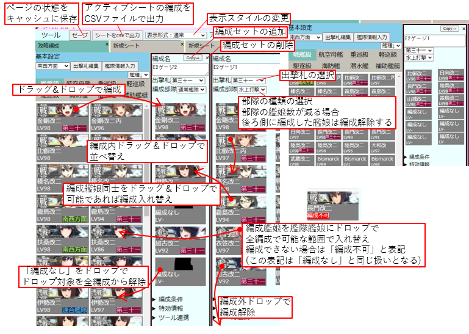
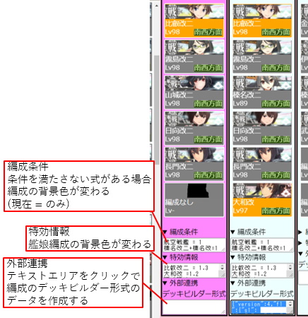
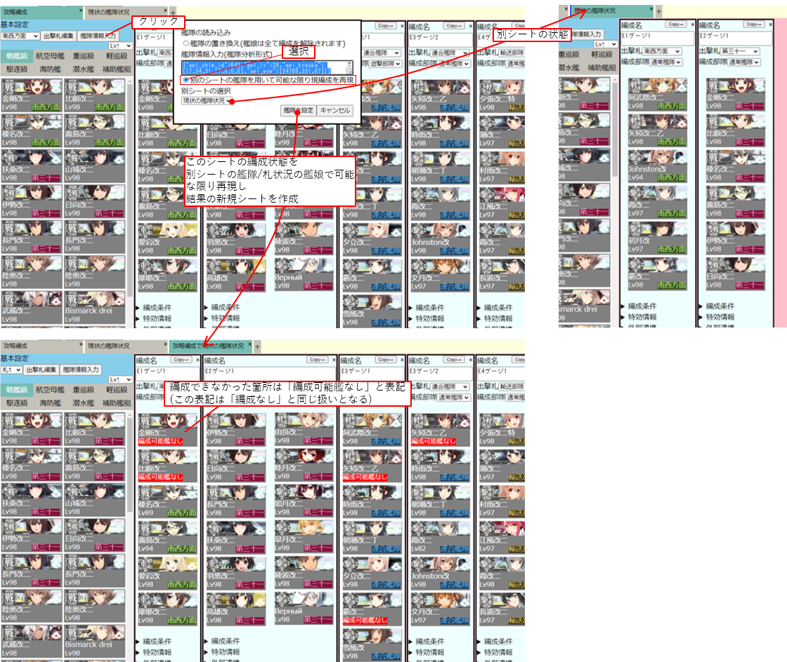

このサイトについて
使い方
初期設定
１．シートの作成
ツール行の下の「＋」をクリック
２．札のテキストと色の設定
「出撃札編集」をクリックで編集ダイアログを開き、終わったら「設定」をクリック
３．艦隊情報の入力
「艦隊情報入力」をクリックで入力ダイアログを開く。
艦隊の置き換えを選択。テキストエリアに艦隊分析形式の艦隊データテキストを入力し、「艦隊を設定」をクリック
艦隊分析形式の艦隊データテキストの取得方法については各自で調べて下さい
七四式だと編成情報右クリックで簡単に取得できます

基本操作
編成セットを必要分追加し、出撃札と編成部隊の種類(通常、連合等)を選択
艦娘をドラッグ＆ドロップで編成に追加すると札情報が追加されます
並べ替えや編成解除もドラッグ＆ドロップで対応
上部ツール欄でページの保存、編成のCSV出力、表示形式の切り替えが可能

その他機能
編成単位の機能
各編成で個別に割り当てられた機能について
・「編成条件」のテキストエリアに図のような式を入れると、全ての式を満たさない限り編成の背景色が変化する
・「特効情報」のテキストエリアに図のように艦娘名を入れると編成された艦娘の背景色が変化する
・「外部連携」のテキストエリアをクリックすると編成の通りのデッキビルダー形式のテキストを生成する

別シートの艦隊によるシート内編成の再現
シート内の全編成を別のシートの艦隊を用い(札の状態も考慮する)可能な限り再現した新規シートを作成する
艦娘の割り当ては右側の編成から優先的に行い、改装段階も含めた同じ艦の中から同じ札が付いた艦娘とレベルが高い艦娘を優先して編成する
編成ができなかった箇所には「編成可能艦なし」と記載のある艦娘が編成されるが、ページ内の扱いは「編成なし」と同じとなる

更新履歴
2022/05/23 とりあえずだいたいそれっぽく動いたものを公開
メモ
・シートのデータを公開可能な共有リンク生成(firebase？)
・セーブはオート化？
・ページエレメントの生成はテンプレートファイルから読み込み？
・マウスオーバー時のカーソルの変更
・マウスオーバー時の艦娘情報の充実化
・リファクタリング/例外処理/ファイル分割/命名規則/cssの修正
このサイトを用いることで発生したいかなる問題についても責任を負いかねますので、それに同意できる方のみご利用ください。
当サイトで用いられている画像は著作権法に基づき引用しております。権利者様からの画像等の削除の依頼等には速やかに対処いたします。
連絡先(twitter)
ツール
表示形式：通常
表示形式：省スペース
＋